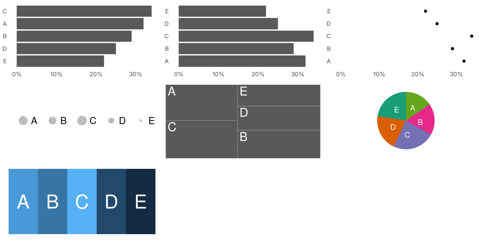
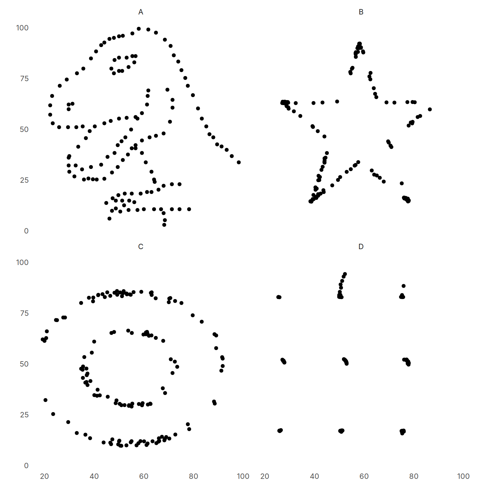

| df | mean_x | mean_y | sd_x | sd_y |
|---|---|---|---|---|
| A | 54.26 | 47.83 | 16.77 | 26.94 |
| B | 54.27 | 47.84 | 16.77 | 26.93 |
| C | 54.27 | 47.83 | 16.77 | 26.94 |
| D | 54.26 | 47.84 | 16.77 | 26.93 |
Last updated on 2025-05-20
by Karl Broman and Kara Woo (2018)
In all plots: A:32%, B:29%, C:34%, D:25% and E:22%
They have summary statistics:
| df | mean_x | mean_y | sd_x | sd_y |
|---|---|---|---|---|
| A | 54.26 | 47.83 | 16.77 | 26.94 |
| B | 54.27 | 47.84 | 16.77 | 26.93 |
| C | 54.27 | 47.83 | 16.77 | 26.94 |
| D | 54.26 | 47.84 | 16.77 | 26.93 |
